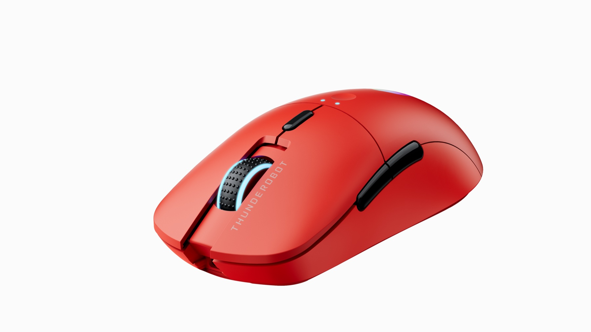
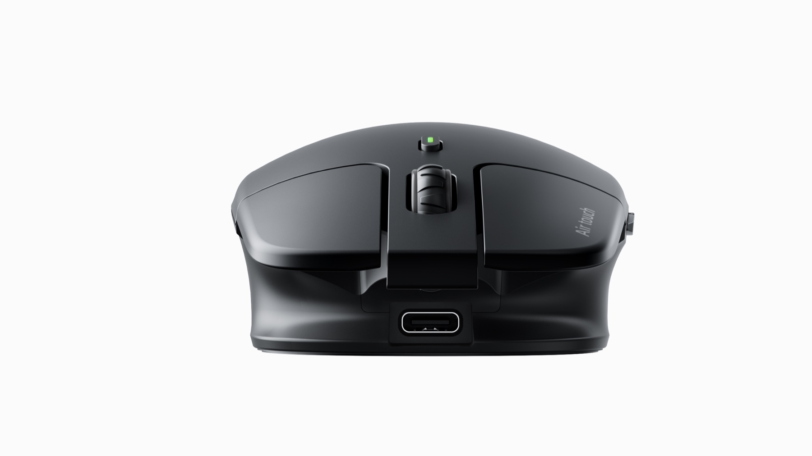

1. Exact model and version
Confirm the model code and whether the sample is wired, single 2.4G, Bluetooth, dual-mode or three-mode.

Archived product route
TALRIVO is currently focusing public product content on gaming headsets and related audio sample review. For current inquiries, start from the gaming headset collection, sample request page or contact form.
Gaming mouse buyer guide
Before a buyer asks for logo artwork or final quotation, the mouse sample should answer practical product questions: connection mode, sensor, DPI steps, button count, wheel behavior, battery or cable structure, shell finish, packaging and the RFQ details needed for a focused project discussion.

Short answer
For private-label mouse sourcing, the first sample review should connect the exact model code, connection mode, sensor, DPI, battery or cable route, shell finish, product images and packaging plan. Start from the gaming accessories collection, then choose model-specific pages such as BH-703 Air Touch, BH-207, BH-905 or BH-701.
Checklist
Confirm the model code and whether the sample is wired, single 2.4G, Bluetooth, dual-mode or three-mode.
Check the sensor name, DPI levels and whether the sample behavior matches the specification reference.
Review left and right switches, side buttons, silent-click direction and wheel behavior on the physical sample.
Confirm AA, AAA, lithium, 14500, 18650-type battery or wired USB structure before writing public product copy.
Individual product images and sample handling help compare grip shape, surface texture, color and visible assembly details.
Check dongle storage, Type-C interface, charging cable needs and whether accessories match the buyer's channel plan.
Discuss logo placement only after the selected shell and color direction are confirmed.
Confirm retail box, manual language, barcode area and accessory layout after the base sample is approved.
Single-product images support visual review, while PPT slides remain specification references. Replace images later if newer studio photos are selected.
Send target market, sales channel, model shortlist, quantity range, sample timing, branding needs and document questions.
Model examples

A vertical ergonomic mouse route with package, cable, guide, underside and desk-use visuals for private-label sample discussion.
A three-mode gaming mouse route for buyers adding mouse products beside gaming headsets.

A vertical mouse route for ergonomic office and productivity accessory ranges.

A suspended-button wireless mouse reference for multi-device office and private-label accessory planning.
FAQ
Buyers should confirm the exact model version, connection mode, sensor, DPI steps, button count, wheel behavior, battery or cable structure, shell finish, logo area, packaging direction and document questions.
Choose the first sample by target channel. Gaming mouse models fit gaming accessory ranges, while vertical mouse models are better for ergonomic office or productivity assortments.
Yes. PPT slides help preserve listed specifications, while single-product images make product appearance, angles and color direction easier to review.
No. Pricing is not published because quotation details depend on selected model version, quantity range, branding, packaging, sample plan and destination market.
Related pages
Share the target market, sales channel, selected model codes, preferred connection type, sample timing, color direction, branding needs and packaging questions.